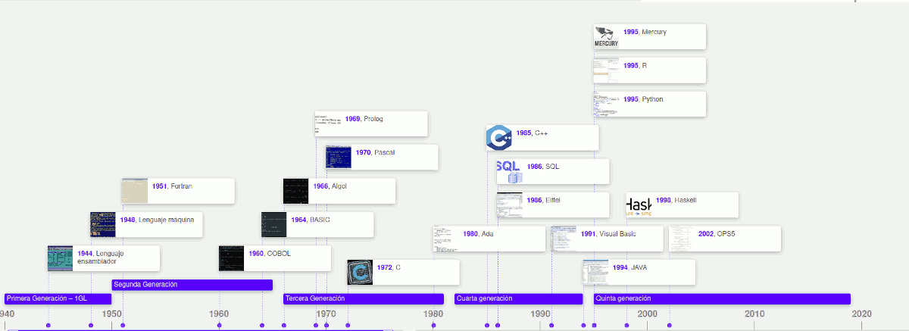
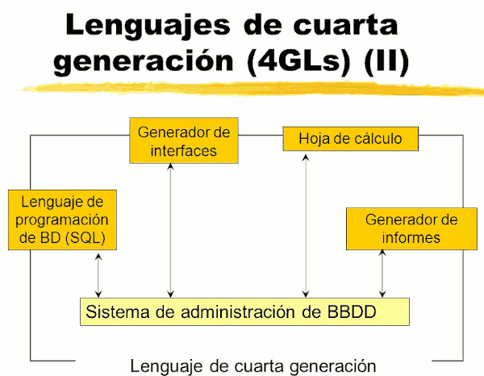

Es posible clasificar los lenguajes según el momento en el que aparecen y sus características en distintas generaciones.

Primera Generación
Lenguaje máquina: específico para cada procesador. Uso de código binario.
Segunda Generación
Lenguaje ensamblador: sustituye los códigos binarios del código máquina por código mnemónicos. Sigue siendo específico para cada familia de procesadores.
Tercera Generación
Lenguajes de Alto Nivel: lenguajes estructurados con sentencias cercanas al lenguaje hablado.
Cuarta Generación
Lenguajes de propósito especial: usados en aplicaciones de gestión y manejo de bases de datos. Son entornos de desarrollo de aplicaciones constituidos por un conjunto de herramientas integradas entre las que se encuentran editores, compiladores, sistemas para el acceso a bases de datos, generadores de informes, generadores de pantallas (modo carácter, interfaces gráficas), etc. La cuarta generación de lenguajes de programación avanza en la sintaxis utilizad, presentando una sintaxis distinta para la representación del control y las estructuras de datos con un mayor nivel de abstracción.

Lenguajes de programación visual
La programación visual brinda los conocimientos necesarios para diseñar y desarrollar aplicaciones con un entorno visual amigable y fácil de utilizar para el usuario.
Los lenguajes de programación visual tienden a facilitar la tarea de los programadores, dado que con los primeros lenguajes de programación crear una ventana suponía mucho trabajo. Con estos lenguajes para el diseño de la interfaz gráfica de la aplicación no se requiere de la programación sino que mediante la selección de los controles necesarios (ventanas, botones, cajas de texto, etc.) se dibujará la interfaz gráfica requerida.
Algunos ejemplos de lenguajes visuales son: Visual Basic, Gambas, Delphi, Developer de Oracle, Borland C.
Lenguajes de uso especifico (DSL)
Los lenguajes de programación de uso especifico o lenguajes específicos de dominio (DSL) han sido creados y se utilizan para el desarrollo de aplicaciones con características muy especificas. Fuera de estas características el uso de estos lenguajes no presenta ninguna utilidad.
En el desarrollo de software, un lenguajes específico de dominio (domain-specific language - DSL) es un lenguaje de programación dedicado a un problema de dominio en particular, o una técnica de representación o resolución de problemas específica. Este concepto no es nuevo, ya que desde siempre existieron lenguajes de programación de propósito específico.
Lo opuesto a un lenguaje específico de dominio son los lenguajes de programación de propósito general, como C, Java, Basic, etc.
Como ejemplos de DSL podemos mencionar a las fórmulas y macros de las hojas de cálculo, las expresiones regulares (conjunto de caracteres que constituyen una expresión de búsqueda de información: grep, awk...) de ciertas utilidades, Csound (un lenguaje para crear archivos de audio), autolisp en Autocad, VBA (Visual Basic para aplicaciones: Excel, word, etc.), logo para enseñar a programar al público infantil, open GL, VRML (creación de gráficos 3D), SQL (Base de datos), etc.
Crear un DSL (con el software que lo soporte) puede valer la pena si el lenguaje permite expresar tipos de problemas y soluciones particulares que los lenguajes preexistentes no pueden modelar tan fácilmente.
Quinta Generación
Naturales: incluyen la IA y los Sistemas Expertos. Se utiliza en redes neuronales. Una red neuronal es una forma de inteligencia artificial que trata de imitar la mente humana.